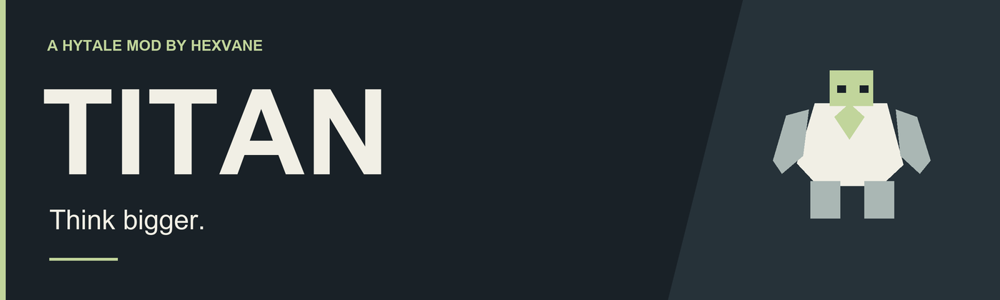
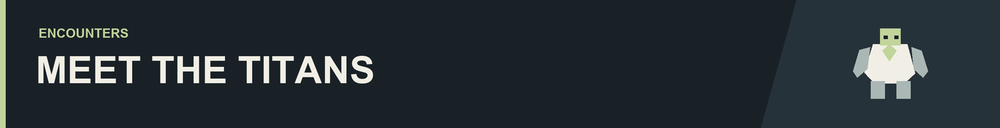

The rock formation ahead stands up. A temple walks across the plains. Somewhere beneath your feet, a sealed coffin waits to be opened.
Titan brings enormous creatures, challenging boss fights, and new discoveries to Hytale. Climb living giants, venture underground, and find out what else is hiding beyond your next expedition.

Stone Talus
A familiar shape in the landscape becomes something much larger when it stands up. These stone giants come in several varieties, scattered across the world.

Roaming Temple
An ancient ruin wanders across the plains on towering legs. It is quite a sight from a distance. Up close, you start to appreciate just how small you are.

Dunewyrm
Something immense calls the desert home. Crossing its territory might turn a quiet journey into the reason you remember that stretch of sand.

Follow a forgotten crypt beneath the surface and descend into the domain of the Crypt Keeper. Bring good gear and a little nerve. Some things have been buried for a reason.

The Baba Yaga House is a curious companion with room for your belongings and legs of its own. For once, home can come along for the adventure.

There is unique loot to discover along the way. Leave a little room in your pack.
Head out alone or bring friends. Encounters scale with your group, so there is a challenge waiting either way.
Optional compatibility with RPG Leveling and Endless Leveling is included.